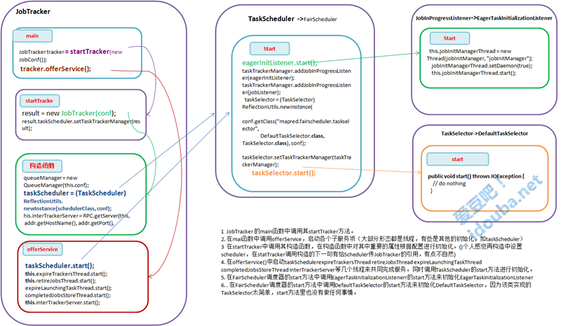
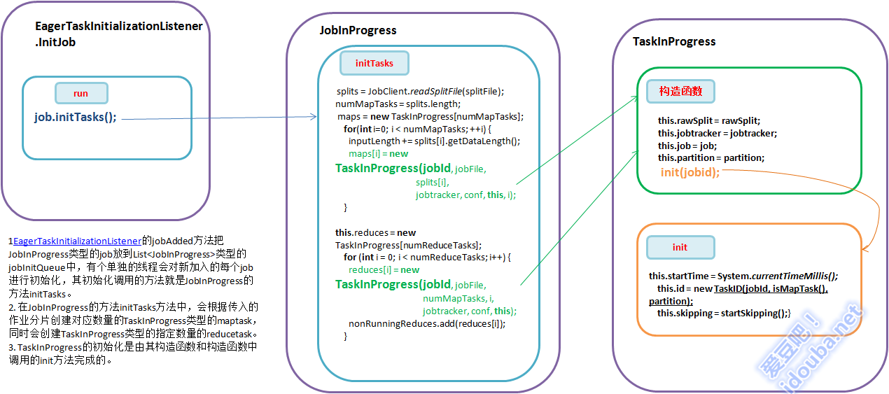
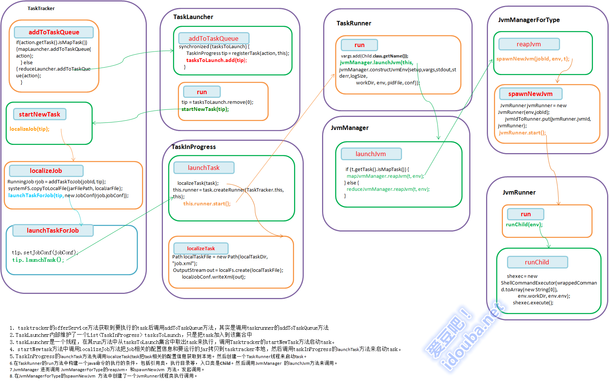
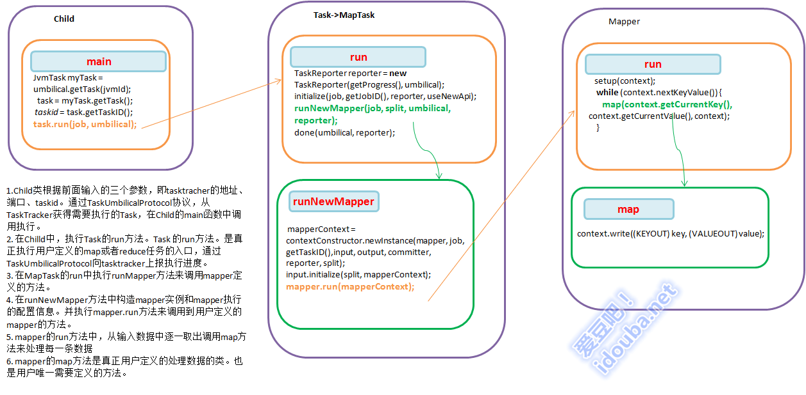
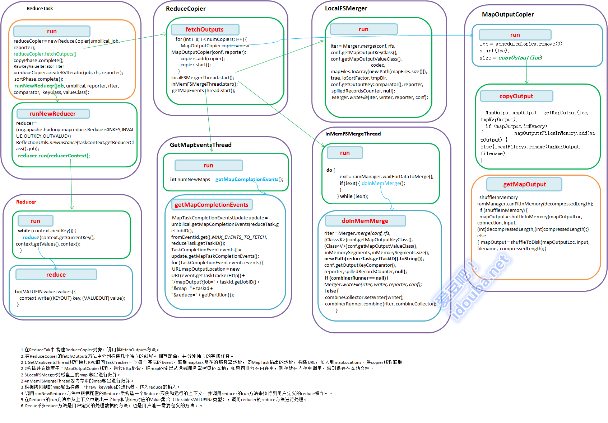

【hadoop代码笔记】hadoop作业提交之汇总
一、概述
在本篇博文中，试图通过代码了解hadoop job执行的整个流程。即用户提交的mapreduce的jar文件、输入提交到hadoop的集群，并在集群中运行。重点在代码的角度描述整个流程，有些细节描述的并不那么详细。 汇总的代码流程图附件:hadoop_mapreduce_jobsubmit
二、主要流程
- Jobclient通过RPC方式调用到jobtracker的submitJob方法提交作业，包括作业的jar、分片和作业描述。
- JobTracker的submitJob方法吧job加入到内存队列中，由独立的线程取出每个JobInProgress的对象调用其initTasks方法，根据传入的作业分片创建对应数量的TaskInProgress类型的maptask和指定数量的Reduce task。
- Tasktracker的offerService定时调用jobTracker的heartbeat发心跳给jobtracker报告状态并获取要执行的task。在haeartbeat中其实是通过配置的Taskscheduler来分配task的。
- TaskTracker初始化时，会初始化并启动两个TaskLauncher类型的线程，mapLauncher，reduceLauncher。在TaskTracker从JobTracher获取到任务后，对应的会把任务添加到两个TaskLauncher的Queue中。TaskLauncher线程一直会定时检查TaskTracher上面有slot可以运行新的Task，则启动Task。
- 先把task运行需要的文件解压到本地，并创建根据Task类型（Map或者Reduce）创建一个TaskRunner线程，在TaskRunner中JvmManager调用JvmManagerForType、JvmRunner来启动一个java进程来执行Map或Reduce任务。在TaskRunner线程执行中，会构造一个_java –D** Child address port tasked_这 样第一个java命令，单独启动一个java进程。在Child的main函数中通过TaskUmbilicalProtocol协议，从 TaskTracker获得需要执行的Task，并调用Task的run方法来执行。
- 对于MapTask的的run方法会通过java反射机制构造根据配置 Mapper，InputFormat，mapperContext等对象，然后调用构造的mapper的run方法执行mapper操作。
- 对于ReduceTask，由ReduceCopier对象的不同线程来获取map输出地址，拷贝输出，merge输出等操作。并利用反射机制根据配置的Reducer类构造一个Reducer实例和运行的上下文。并调用reducer的run方法来执行到用户定义的reduce操作。

三、详细流程、
一）JobTracker等相关功能模块初始化(详细)
本来按照流程，第一步骤应该是Jobclient向Jobtracker发起作业提交的请求。为了更好的理解jobtracker是如何接收从jobclient提交的作业，有必要了解jobtracker相关的服务（和功能模块）的初始化过程。即Jobtracker作为一个服务启动起来，包括其附属的其他服务（和功能模块）。以接受jobclient的作业提交，初始化作业，向tasktracker分配任务。

JobTracker等相关功能模块初始化
- JobTracker 的main函数中调用其startTracker方法。
- 在main函数中调用offerService，启动各个子服务项（大部分形态都是线程，有些是其他的初始化，如taskScheduler）
- ?在startTracker中调用其构造函数，在构造函数中对其中重要的属性根据配置进行初始化。(个人感觉再构造中设置scheduler，在statTracker调用构造的下一句有给Scheduler传JobTracker的引用，有点不自然)。Scheduler和JobTracker实例间，Scheduler包含JobTracker（实际上就是TaskTrackerManager）对象，通过TaskTrackerManager对象获取Hadoop集群的一些信息，如slot总数，QueueManager对象，这些都是调度器中调度算法输入的指标；JobTracker中要包含Scheduler对象，使用Scheduler来为TaskTracker分配task。
- 在offerService()中启动taskSchedulerexpireTrackersThread retireJobsThread expireLaunchingTaskThread completedJobsStoreThread interTrackerServer等几个线程来共同完成服务。同时调用TaskScheduler的start方法进行初始化。
- 在FairScheduler调度器的start方法中调用EagerTaskInitializationListenerr的start方法来初始化EagerTaskInitializationListener
- 在FairScheduler调度器的start方法中调用DefaultTaskSelector的start方法来初始化DefaultTaskSelector，因为该类实现的TaskSelector太简单，start方法里也没有做任何事情。
二）客户端作业提交(详细)
Jobclient使用内置的JobSubmissionProtocol 实例jobSubmitClient 和JobTracker交互。向jobtracker请求一个新的作业ID，计算作业的输入分片，并将运行作业所需的资源（包括作业jar文件，配置文件和计算所得的输入分片）复制到jobtracker的文件系统中一个以作业ID命名的目录下。
- 通过调用JobTracker的getNewJobId()向jobtracker请求一个新的作业ID
- 获取job的jar、输入分片、作业描述等几个路径信息，以jobId命名。
- 其中getSystemDir()是返回jobtracker的系统目录，来放置job相关的文件。包括：mapreduce的jar文件submitJarFile、分片文件submitSplitFile、作业描述文件submitJobFile
- 检查作业的输出说明，如果没有指定输出目录或输出目录以及存在，则作业不提交。参照org.apache.hadoop.mapreduce.lib.output.FileOutputFormat的checkOutputSpecs方法。如果没有指定，则抛出InvalidJobConfException，文件已经存在则抛出FileAlreadyExistsException
- 计算作业的输入分片。通过InputFormat的getSplits(job)方法获得作业的split并将split序列化封装为RawSplit。返回split数目，也即代表有多个分片有多少个map。详细参见InputFormat获取Split的方法。
- writeNewSplits 方法把输入分片写到JobTracker的job目录下。
- 将运行作业所需的资源（包括作业jar文件，配置文件和计算所得的输入分片）复制到jobtracker的文件系统中一个以作业ID命名的目录下。
- 使用句柄JobSubmissionProtocol通过RPC远程调用的submitJob()方法，向JobTracker提交作业。JobTracker作业放入到内存队列中，由作业调度器进行调度。并初始化作业实例。JobTracker创建job成功后会给JobClient传回一个JobStatus对象用于记录job的状态信息，如执行时间、Map和Reduce任务完成的比例等。JobClient会根据这个JobStatus对象创建一个 NetworkedJob的RunningJob对象，用于定时从JobTracker获得执行过程的统计数据来监控并打印到用户的控制台。?
三）JobTracker接收作业(详细)
JobTracker根据接收到的submitJob()方法调用后，把调用放入到内存队列中，由作业调度器进行调度。并初始化作业实例，从共享文件系统中获取JobClient计算好的输入分片信息，为每个分片创建一个map任务，根据mapred.reduce.task设置来创建指定数量的reduce任务。

JobTracker接收作业提交
- JobClient通过RPC的方式向JobTracker提交作业；
- 调用JobTracker的submitJob方法。该方法是JobTracker向外提供的供调用的提交作业的接口。
- submit方法中调用JobTracker的addJob方法。
- 在addJob方法中会把作业加入到集合中供调度，并会触发注册的JobInProgressListener的jobAdded事件。由上篇博文的jobtracker相关服务和功能的初始化的FairScheduler的start方法中看到，这里注册的是两个JobInProgressListener。分别是FairScheduler的内部类JobListener和EagerTaskInitializationListener。
- FairScheduler的内部类JobListener响应jobAdded事件事件。只是为每个加入的Job创建一个用于FairScheduler调度用的JobInfo对象，并将其和job的对应的存储在Map<JobInProgress, JobInfo> infos集合中。
- EagerTaskInitializationListener响应jobAdded事件事件。jobAdded 只是简单的把job加入到一个List
类型的 jobInitQueue中。并不直接对其进行初始化，对其中的job的处理由另外线程JobInitManager来做。该线程，一直检查 jobInitQueue是否有作业，有则拿出来从线程池中取一个线程InitJob处理。关于作业的初始化过程专门在下一篇文章中介绍。
四）Job初始化(详细)
Jobtracker响应作业提交请求，将提交的作业加入到一个列表中，由单独的线程来对列表中的job进行初始化。至此在Jobtracker一端对提交的job的准备工作就完毕了。

Hadoop Job初始化
- EagerTaskInitializationListener的 jobAdded方法把JobInProgress类型的job放到List
类型的 jobInitQueue中，有个单独的线程会对新加入的每个job进行初始化，其初始化调用的方法就是JobInProgress的方法 initTasks。 - 在JobInProgress的方法initTasks方法中，会根据传入的作业分片创建对应数量的TaskInProgress类型的maptask，同时会创建TaskInProgress类型的指定数量的reducetask。
- TaskInProgress的初始化是由其构造函数和构造函数中调用的init方法完成的。有构造MapTask的构造函数和构造ReduceTask的构造函数。分别是如下。其主要区别在于构造mapTask是要传入输入分片信息的RawSplit，而Reduce Task则不需要。两个构造函数都要调用init方法，进行其他的初始化。
五） TaskTracker获取Task，即jobtracker派发task（详细）
tasktracker定时发心跳给jobtracker，并从jobtracker获取要执行的task。jobtracker在分配map任务会考虑数据本地化，对于reduce任务不用考虑本地化。

TaskTracker获取Task
- TaskTracker在run中调用offerService()方法一直死循环的去连接Jobtracker，先Jobtracker发送心跳，发送自身状态，并从Jobtracker获取任务指令来执行。
- 在JobTracker的heartbeat方法中，对于来自每一个TaskTracker的心跳请求，根据一定的作业调度策略调用assignTasks方法选择一定Task
- Scheduler调用对应的LoadManager的canAssignMap方法和canAssignReduce方法以决定是否可以给 tasktracker分配任务。默认的是CapBasedLoad，全局平均分配。即根据全局的任务槽数，全局的map任务数的比值得到一个load系 数，该系数乘以待分配任务的tasktracker的最大map任务数，即是该tasktracker能分配得到的任务数。如果太tracker当前运行 的任务数小于可运行的任务数，则任务可以分配新作业给他。
- Scheduler的调用TaskSelector的obtainNewMapTask或者obtainNewReduceTask选择Task。
- 在DefaultTaskSelector中选择Task的方法其实只是封装了JobInProgress的对应方法。根据待派发Task的TaskTracker根据集群中的TaskTracker数量（clusterSize），运行TraskTracker的服务器数（numUniqueHosts），该Job中map task的平均进度（avgProgress），可以调度map的最大水平（距离其实），选择一个task执行。考虑到map的本地化，选择reducetask时，不用考虑本地化。
- JobTracker根据得到的Task构造TaskTrackerAction设置到到HeartbeatResponse返回给TaskTracker。
- TaskTracker中将来自JobTracker的任务加入到TaskQueue中等待执行。
六）Tasktracker启动task（详细）
TaskTracker初始化时，会初始化并启动两个TaskLauncher类型的线程，mapLauncher，reduceLauncher。在TaskTracker从JobTracher获取到任务后，对应的会把任务添加到两个 TaskLauncher的Queue中，其实是TaskLauncher维护的一个列表List

tasktracker启动task
- tasktracker的offerService方法获取到要执行的task后调用addToTaskQueue方法，其实是调用taskrunner的addToTaskQueue方法
- TaskLauncher内部维护了一个List
tasksToLaunch，只是把task加入到该集合中 - taskLauncher是一个线程，在其run方法中从tasksToLaunch集合中取出task来执行，调用Tasktracker的startNewTask方法启动task。
- startNewtask方法中调用localizeJob方法把job相关的配置信息和要运行的jar拷贝到tasktracker本地，然后调用taskInProgress的launchTask方法来启动task。
- TaskInProgress的launchTask方法先调用localizeTask(task把task相关的配置信息获取到本地。然后创建一个TaskRunner线程来启动task。
- 在TaskRunner的run方法中构建一个java命令的执行的条件，包括引用类，执行目录等，入口类是Child。然后调用JvmManager 的launchJvm方法来调用。
- JvmManager 进而调用 JvmManagerForType的reapJvm，和spawnNewJvm 方法，发起调用。
- 在JvmManagerForType的spawnNewJvm 方法中创建了一个JvmRunner线程类执行调用。
- JvmRunner线程的run调用runChild方法来执行 一个命令行的调用。
七）Tasktracker运行map任务（详细）
TaskRunner线程执行中，会构造一个_java –D** Child address port tasked_这 样第一个java命令，单独启动一个java进程。在Child的main函数中通过TaskUmbilicalProtocol协议，从 TaskTracker获得需要执行的Task，并调用Task的run方法来执行，而Task的run方法会通过java反射机制构造 Mapper，InputFormat，mapperContext，然后调用构造的mapper的run方法执行mapper操作。

Child启动map任务
- Child类根据前面输入的三个参数，即tasktracher的地址、端口、taskid。通过TaskUmbilicalProtocol协议，从TaskTracker获得需要执行的Task，在Child的main函数中调用执行。
- 在Chilld中，执行Task的run方法。Task 的run方法。是真正执行用户定义的map或者reduce任务的入口，通过TaskUmbilicalProtocol向tasktracker上报执行进度。
- 在MapTask的run中执行runMapper方法来调用mapper定义的方法。
- 在runNewMapper方法中构造mapper实例和mapper执行的配置信息。并执行mapper.run方法来调用到用户定义的mapper的方法。
- mapper的run方法中，从输入数据中逐一取出调用map方法来处理每一条数据
- mapper的map方法是真正用户定义的处理数据的类。也是用户唯一需要定义的方法。
八）TaskTracker运行reduce任务（详细）
TaskRunner线程执行中，会构造一个_java –D** Child address port tasked_这样第一个java命令，单独启动一个java进程。在Child的main函数中通过TaskUmbilicalProtocol协议，从TaskTracker获得需要执行的Task，并调用Task的run方法来执行。在ReduceTask而Task的run方法会通过java反射机制构造Reducer，Reducer.Context，然后调用构造的Reducer的run方法执行reduce操作。不同于map任务，在执行reduce任务前，需要把map的输出从map运行的tasktracker上拷贝到reducer运行的tasktracker上。 Reduce需要集群上若干个map任务的输出作为其特殊的分区文件。每个map任务完成的时间可能不同，因此只要有一个任务完成，reduce任务就开始复制其输出。这就是reduce任务的复制阶段。其实是启动若干个MapOutputCopier线程来复制完所有map输出。在复制完成后reduce任务进入排序阶段。这个阶段将由LocalFSMerger或InMemFSMergeThread合并map输出，维持其顺序排序。【即对有序的几个文件进行归并，采用归并排序】在reduce阶段，对已排序输出的每个键都要调用reduce函数，此阶段的输出直接写到文件系统，一般为HDFS上。（如果采用HDFS，由于tasktracker节点也是DataNoe，所以第一个块副本将被写到本地磁盘。 即数据本地化） Map 任务完成后，会通知其父tasktracker状态更新，然后tasktracker通知jobtracker。通过心跳机制来完成。因此jobtracker知道map输出和tasktracker之间的映射关系。Reducer的一个getMapCompletionEvents线程定期询问jobtracker以便获取map输出位置。

Child启动reduce任务
- 在ReduceTak中 构建ReduceCopier对象，调用其fetchOutputs方法。
2.在ReduceCopier的fetchOutputs方法中分别构造几个独立的线程。相互配合，并分别独立的完成任务。
2.1 GetMapEventsThread线程通过RPC询问TaskTracker，对每个完成的Event，获取maptask所在的服务器地址，即MapTask输出的地址，构造URL，加入到mapLocations，供copier线程获取。
2.2 构造并启动若干个MapOutputCopier线程，通过http协议，把map的输出从远端服务器拷贝的本地，如果可以放在内存中，则存储在内存中调用，否则保存在本地文件。
2.3 LocalFSMerger对磁盘上的map 输出进行归并。
2.4 MemFSMergeThread对内存中的map输出进行归并。 3. 根据拷贝到的map输出构造一个raw keyvalue的迭代器，作为reduce的输入。
-
调用runNewReducer方法中根据配置的Reducer类构造一个Reducer实例和运行的上下文。并调用reducer的run方法来执行到用户定义的reduce操作。
-
在Reducer的run方法中从上下文中取出一个key和该key对应的Value集合（Iterable
类型），调用reducer的reduce方法进行处理。 -
Recuer的reduce方法是用户定义的处理数据的方法，也是用户唯一需要定义的方法。
汇总的代码流程图附件：hadoop_mapreduce_jobsubmit
完。